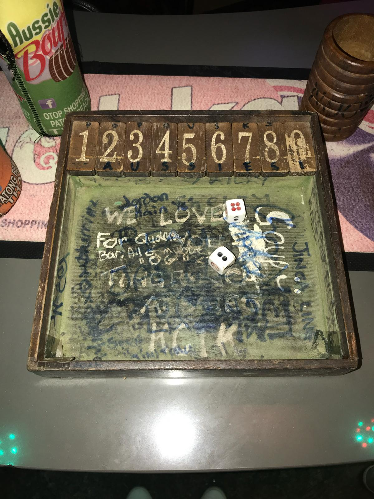
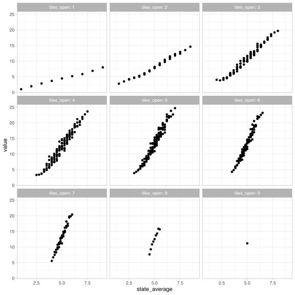

ddice <- function(x) {
probs <- c(1, 2, 3, 4, 5, 6, 5, 4, 3, 2, 1) / 36
out <- numeric(length(x))
# Return 0 if the element is not in 2 to 12
is_valid <- x >= 2 & x <= 12
out[is_valid] <- probs[x[is_valid] - 1]
return(out)
}
ddice(1:12)
#> [1] 0.00000000 0.02777778 0.05555556 0.08333333 0.11111111 0.13888889
#> [7] 0.16666667 0.13888889 0.11111111 0.08333333 0.05555556 0.02777778Shut the box!
Finding the optimal Shut the Box strategy.
A few years ago I went to Thailand with some friends. We were hanging out in a bar one night and ended up playing this game called Shut the Box.

The board has numbers 1 to 9. Each turn, you roll two dice. You can then flip or “shut” any combination of numbers which sum to the total of the two dice. The game ends when you can no longer make a valid move. You win the game if no numbers are left to shut, otherwise you score the sum of the remaining open numbers.
We all played and started to develop our own strategies. I knew that the sum of two dice is most likely to be 7 and convinced myself that as 7 was the most likely sum and 1, 2, 3 and 4 were the least likely, I should prioritise shutting 1, 2, 3 and 4.
My friend’s strategy was to prioritise 7, 8 and 9 if it was possible to shut them, and if not, to prioritise the smallest numbers. He did much better and my intuition was completely wrong! But I’ve always wondered if I could find the mathematically optimal strategy.
Thinking about this as a stochastic optimisation problem, we can model the game as a Markov decision process.
Markov decision processes
A Markov decision process models the evolution of a system over time. At each time step, an agent makes a decision that affects the future state of the system.
The process has a state space \(S\) and evolves in discrete time steps \(t = 1, 2 \ldots\)
At each time step, the agent chooses from a set of possible actions. Typically, the set of available actions depends on the current state \(s \in S\), and is denoted \(A(s)\).
Given a state \(s \in S\) and an action \(a \in A(s)\), the system transitions to a new state \(s'\) according to a transition probability \(P(s' \mid s, a)\). Each transition gives a reward \(R(s, s', a)\). These transition probabilities are Markovian – the next state depends only on the current state and action, not on the history of past states and actions.
The typical goal of the agent is to choose actions that maximise the expected cumulative reward over time. This means finding a policy \(\pi(s)\) – a probabilistic mapping of states to actions – which maximises the expected total reward.
Our model
For a game of Shut the Box, the state space \(S\) consists of all possible subsets of the numbers 1 to 9. The state represents the set of numbers that are not shut. The game starts with all numbers open, \(s = \{1, 2, \ldots, 9\}\).
The available actions at state \(s\) depend on the total \(d\) of two dice. \(A_d(s)\) is the set of all subsets of \(s\) whose elements sum to \(d \in \{ 2, 3, \ldots, 12\}\). The chosen action \(a \in A_d(s)\) represents the numbers to shut on that turn.
For example, say the remaining numbers were \(s = \{1, 2, 3, 4, 5\}\), and we roll \(d = 8\), we could shut \(A_8(s) = \{\{3, 5\}\), \(\{1, 2, 5\}\), or \(\{1, 3, 4\}\}\).
The transitions between different states are deterministic based on this choice, so \(s' = s \setminus a\).
We play over the discrete time steps \(t = 1, 2, \ldots\) and the game ends when there are no valid moves left, \(A_d(s) = \emptyset\). At that point a cost is incurred: \[R(s) = \sum_{i \in s} i.\]
Our goal is to find a policy \(\pi(s, d)\) that minimises the expected cost.
Solution
Let \(V(s)\) be the expected cost at the end of the game when proceeding from state \(s\).
For a given dice roll \(d\), define: \[ V_d(s) = \begin{cases} \min\limits_{a \in A_d(s)} V(s \setminus a) & \text{if } A_d(s) \ne \emptyset, \\ \sum\limits_{i \in s} i & \text{otherwise}. \end{cases} \]
Then the overall expected cost is: \[V(s) = \sum_{d=2}^{12} P(d) \cdot V_d(s)\]
where \(P(d)\) is the probability of rolling two dice which sum to \(d\).
If no valid actions remain, then \(V(s)\) is equivalent to the final reward: \[V(s) = R(s) = \sum_{i \in s} i.\]
Using dynamic programming, we can compute the expected cost for each state \(s\) by iterating over all possible states and actions.
First we create a function to compute the probability of rolling two dice which sum to \(d\):
Next we create a function to compute the set of valid actions for a given state and dice total:
library(purrr)
valid_actions <- function(s, d) {
if (d < 2 || d > 12) {
stop("Dice total must be between 2 and 12.")
}
if (is.null(s) || all(is.na(s))) {
return(NA)
}
# The combn function doesn't handle vectors of length 1 as we intended, so
# we handle the special case here
if (length(s) == 1) {
return(if (s == d) list(s) else NA)
}
subsets <- map(1:length(s), function(x) combn(s, x, simplify = FALSE)) |>
flatten()
valid_subsets <- keep(subsets, function(x) sum(x) == d)
if (length(valid_subsets) == 0) {
return(NA)
}
return(valid_subsets)
}
valid_actions(1:5, 8)
#> [[1]]
#> [1] 3 5
#>
#> [[2]]
#> [1] 1 2 5
#>
#> [[3]]
#> [1] 1 3 4We can implement the value function to compute the expected cost of a given state. We use memoisation to speed up the computation:
library(memoise)
value <- function(s) {
# If the state is empty, no cost
if (is.null(s) || all(is.na(s))) {
return(0)
}
dice_values <- 2:12
dice_probs <- ddice(dice_values)
# For each dice roll, calculate the min value of next state if valid actions exist
expected_costs <- map2_dbl(dice_values, dice_probs, function(d, p) {
actions <- valid_actions(s, d)
if (is.null(actions) || all(is.na(actions))) {
# No valid action, the game ends and we incur cost
return(p * sum(s))
}
# Otherwise, take the best (minimal) value among next states
min_cost <- map_dbl(actions, function(a) value(setdiff(s, a))) |> min()
return(p * min_cost)
})
# Expected cost is weighted average over all dice outcomes
sum(expected_costs)
}
value <- memoise(value)
value(8)
#> [1] 6.888889
value(c(2, 6))
#> [1] 5.969136And finally, for a given state and dice total, we can compute the optimal action to take:
optimal_action <- function(s, d) {
actions <- valid_actions(s, d)
if (is.null(actions) || all(is.na(actions))) {
return(NA)
}
# Evaluate each possible next state and pick the one with the lowest value
values <- map_dbl(actions, function(a) value(setdiff(s, a)))
best_index <- which.min(values)
return(actions[[best_index]])
}
optimal_action(1:5, 8)
#> [1] 3 5Results
With some help from Copilot we get a function to simulate a game of Shut the Box:
Code
simulate_game <- function(state = 1:9) {
cat("🎲 Starting a game of Shut the Box!\n")
cat("Tiles open:", paste0("{", paste(state, collapse = ", "), "}"), "\n\n")
turn <- 1
while (length(state) > 0) {
cat(glue::glue("Turn {turn}"))
turn <- turn + 1
# Roll two dice
dice_values <- 2:12
d <- sample(dice_values, 1, prob = ddice(dice_values))
cat("\nRolled:", d, "\n")
acts <- valid_actions(state, d)
if (length(acts) == 0) {
cat("No valid actions! Game over.\n")
cat("Tiles left:", paste0("{", paste(state, collapse = ", "), "}"), "\n")
cat(glue::glue("Final score (sum of remaining tiles): {sum(state)}"))
cat("\n")
return(invisible(NULL))
}
a <- optimal_action(state, d)
cat("Action taken:", paste0("{", paste(a, collapse = ", "), "}"), "\n")
state <- setdiff(state, a)
cat("Tiles now:", ifelse(length(state) == 0, "(none - you've shut the box!)", paste0("{", paste(state, collapse = ", "), "}")), "\n\n")
}
cat("🏆 Congratulations, you've shut the box!\n")
cat("Final score: 0\n")
}
set.seed(123)
simulate_game()#> 🎲 Starting a game of Shut the Box!
#> Tiles open: {1, 2, 3, 4, 5, 6, 7, 8, 9}
#>
#> Turn 1
#> Rolled: 8
#> Action taken: {8}
#> Tiles now: {1, 2, 3, 4, 5, 6, 7, 9}
#>
#> Turn 2
#> Rolled: 10
#> Action taken: {1, 9}
#> Tiles now: {2, 3, 4, 5, 6, 7}
#>
#> Turn 3
#> Rolled: 6
#> Action taken: {6}
#> Tiles now: {2, 3, 4, 5, 7}
#>
#> Turn 4
#> Rolled: 11
#> Action taken: {4, 7}
#> Tiles now: {2, 3, 5}
#>
#> Turn 5
#> Rolled: 3
#> Action taken: {3}
#> Tiles now: {2, 5}
#>
#> Turn 6
#> Rolled: 7
#> Action taken: {2, 5}
#> Tiles now: (none - you've shut the box!)
#>
#> 🏆 Congratulations, you've shut the box!
#> Final score: 0Great news - we won a game using our optimal policy!
Although we’ve got a way to programatically play the game optimally from each state, it’s still hard to know what the “rule” is without making use of some complicated look-up tables. I wanted to plot something, but the the board can have up to nine numbers open which makes it difficult to picture what’s going on in two or three dimensions.
To make things easier to understand, we group states by how many tiles remain open. We can then plot the expected cost for each state against the average open tile number:
Code
library(dplyr, warn.conflicts = FALSE)
library(ggplot2)
# Create a data frame with all possible states and their expected values
all_states <- map(1:9, function(x) combn(1:9, x, simplify = FALSE)) |>
flatten() |>
append(list(NA), after = 0)
policy_table <- tibble(
state = all_states,
label = map_chr(all_states, function(x) paste0("{", paste(x, collapse = ", "), "}")),
value = map_dbl(all_states, value),
)
# Let's look at a sample of the data
policy_table |> sample_n(10)
#> # A tibble: 10 × 3
#> state label value
#> <list> <chr> <dbl>
#> 1 <int [5]> {1, 3, 5, 7, 9} 12.3
#> 2 <int [3]> {4, 7, 8} 14.5
#> 3 <int [5]> {1, 3, 4, 7, 8} 12.0
#> 4 <int [4]> {3, 4, 7, 8} 15.2
#> 5 <int [4]> {4, 5, 6, 9} 18.0
#> 6 <int [2]> {1, 5} 4.61
#> 7 <int [5]> {3, 5, 6, 8, 9} 22.7
#> 8 <int [4]> {1, 3, 4, 6} 5.43
#> 9 <int [3]> {2, 6, 7} 9.86
#> 10 <int [3]> {2, 6, 8} 12.5
policy_table |>
filter(!is.na(state)) |>
mutate(
state_average = map_dbl(state, mean),
tiles_open = map_dbl(state, length)
) |>
select(state_average, value, tiles_open) |>
ggplot(aes(state_average, value)) +
geom_point() +
facet_wrap(vars(tiles_open), nrow = 3, labeller = "label_both") +
theme_light()
This definitely shows a pattern! States with higher average open tiles have higher expected costs. The costs are high, indicating some difficulty in shutting any tiles when the board is mostly made up of higher numbers. This supports the idea that we want to target higher numbers first.
I was curious whether this holds across all states, for all dice rolls. Do we always prioritise the action which shuts the largest number?
Here’s the instances where we don’t shut the largest number possible:
Code
library(tidyr)
optimal_actions <- policy_table |>
expand_grid(dice_total = 2:12) |>
mutate(
actions = map2(state, dice_total, function(s, d) valid_actions(s, d)),
optimal_action = map2(state, dice_total, function(s, d) optimal_action(s, d))
)
optimal_actions |>
mutate(
valid_actions_max_element = map_dbl(
actions,
function(x) if (is.null(x) || all(is.na(x))) NA else max(unlist(x))
),
valid_actions = map_chr(
actions,
function(x) if (is.null(x) || all(is.na(x))) NA else reduce(
x[-1],
function(y, z) paste0(y, "; {", paste(z, collapse = ", "), "}"),
.init = paste0("{", paste(x[[1]], collapse = ", "), "}")
)
),
optimal_action_max_element = map_dbl(
optimal_action,
function(x) if (is.null(x) || all(is.na(x))) NA else max(unlist(x))
),
optimal_action = map_chr(
optimal_action,
function(x) if (is.null(x) || all(is.na(x))) NA else paste0(
"{", paste(unlist(x), collapse = ", "), "}"
)
),
) |>
filter(valid_actions_max_element != optimal_action_max_element) |>
select(state = label, dice_total, valid_actions, optimal_action) |>
DT::datatable(rownames = FALSE)I found myself staring at this for a while, particularly at the results for state \(\{1, 4, 5, 8\}\) given a dice roll of 9. In this scenario we can choose to close \(\{1, 8\}\) or \(\{4, 5\}\). Our computations suggest closing \(\{4, 5\}\).
value(c(1, 8))
#> [1] 6.888889
value(c(4, 5))
#> [1] 7.027778At first, this result felt counterintuitive — I had expected that winning (shutting all tiles) from the state \(\{4, 5\}\) would be more likely than from \(\{1, 8\}\), and so this would give \(\{4, 5\}\) a lower expected cost.
From the state \(\{4, 5\}\), we can only proceed if we roll a 4, 5, or 9. Any other dice roll results in an immediate loss:
\[ \begin{align} P(\text{Win from } \{4, 5\}) &= P(\text{Roll 4 and win from } \{5\}) \\ &+ P(\text{Roll 5 and win from } \{4\}) \\ &+ P(\text{Roll 9}) \end{align} \]
We observe that:
\[ P(\text{Win from } \{4\}) = P(\text{Roll } 4) = \frac{3}{36}, \]
and
\[ P(\text{Win from } \{5\}) = P(\text{Roll } 5) = \frac{4}{36}. \]
Combining these, we compute:
\[ P(\text{Win from } \{4, 5\}) = \frac{3}{36} \cdot \frac{3}{36} + \frac{4}{36} \cdot \frac{4}{36} + \frac{4}{36} \approx 0.13. \]
The probability of winning from \(\{1, 8\}\) is the same as rolling a 9 (as that’s the only winning action), which is \(\frac{4}{36} \approx 0.11\). So it’s true – we’re slightly more likely to win the game from the state \(\{4, 5\}\). But our value function isn’t set up to maximise our probability of winning, it’s set up to minimise our expected cost.
The possibility of scoring 1 from state \(\{1, 8\}\) by rolling an 8 pulls the expected cost down, making it the better state to land on. The objectives of maximising winning chances and minimising expected costs diverge slightly!
So we’ve not managed to come up with a “rule” for people to follow, but it seems like we can do pretty well by closing fewer tiles, and prioritising closing higher numbers.
Finally, to wrap up, what is the state with the highest expected cost?
policy_table |>
arrange(desc(value)) |>
select(label, value) |>
head()
#> # A tibble: 6 × 2
#> label value
#> <chr> <dbl>
#> 1 {5, 6, 7, 8, 9} 24.7
#> 2 {4, 5, 7, 8, 9} 23.8
#> 3 {6, 7, 8, 9} 23.6
#> 4 {4, 5, 6, 7, 8, 9} 23.2
#> 5 {5, 7, 8, 9} 22.7
#> 6 {4, 6, 7, 8, 9} 22.7Turns out my original plan wasn’t just inoptimal, but the game state where 1, 2, 3 and 4 have all been shut has the highest expected cost. It’s the worst possible strategy!